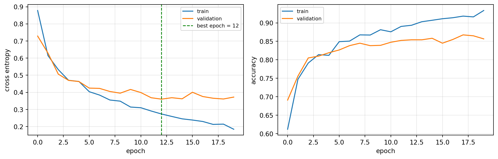
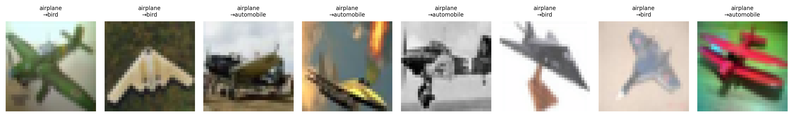
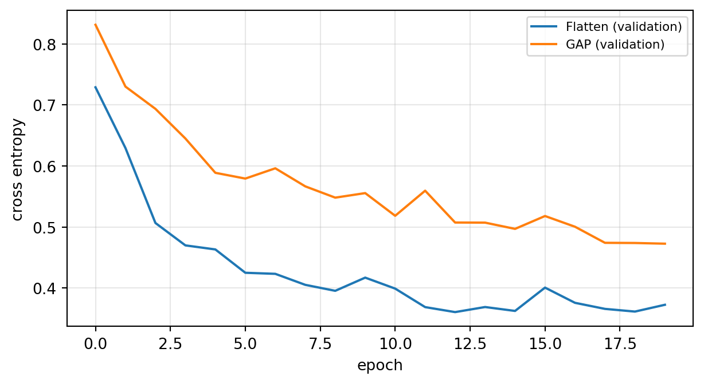

import numpy as np
import pandas as pd
import torch
import torch.nn as nn
import matplotlib.pyplot as plt
torch.manual_seed(42)
np.random.seed(42)
def n_params(m):
return sum(p.numel() for p in m.parameters())실습 6주차: CNN 구조 만들고 학습시키기

이번 주에 익히는 것
| 개념 | 이론과의 대응 |
|---|---|
nn.ReLU · nn.MaxPool2d |
활성화와 풀링 (Ch07) |
| 층별 출력 크기 추적 | CNN 연산 연습 예제 1 (Ch07) |
| 파라미터 수 세기 | 특성 추출부 25,340 / 전체 222,450 |
| Flatten vs GAP | 196,100 → 4,100 |
nn.Module 클래스 |
모델을 직접 정의하기 |
| 학습 루프 · 학습커브 · 조기 종료 | 3~4주차 규칙을 이미지로 |
| 수용 영역과 파라미터 | 3×3 두 번 vs 5×5 한 번 (Ch07) |
1. 부품 세 개 — 콘볼루션, 활성화, 풀링
1-1. ReLU는 원소마다 적용된다
z = torch.tensor([[-2.0, -0.5, 0.0, 1.5, 3.0]])
print('입력 :', z.numpy())
print('ReLU :', nn.ReLU()(z).numpy())
print('파라미터:', n_params(nn.ReLU()))입력 : [[-2. -0.5 0. 1.5 3. ]]
ReLU : [[0. 0. 0. 1.5 3. ]]
파라미터: 0음수를 0으로 바꾸는 것이 전부다. 학습할 파라미터가 없다.
1-2. 풀링 — 손계산과 대조
Ch07의 예시를 그대로 코드로 확인한다.
t = torch.tensor([[1., 3., 2., 4.],
[5., 6., 1., 2.],
[7., 2., 3., 8.],
[1., 4., 5., 6.]])[None, None] # (N=1, C=1, H=4, W=4)
print('입력 shape :', tuple(t.shape))
print('\nMaxPool(2):\n', nn.MaxPool2d(2)(t).squeeze().numpy())
print('\nAvgPool(2):\n', nn.AvgPool2d(2)(t).squeeze().numpy())
print('\n출력 shape :', tuple(nn.MaxPool2d(2)(t).shape))입력 shape : (1, 1, 4, 4)
MaxPool(2):
[[6. 4.]
[7. 8.]]
AvgPool(2):
[[3.75 2.25]
[3.5 5.5 ]]
출력 shape : (1, 1, 2, 2)왼쪽 위 2×2 블록 [[1,3],[5,6]] 의 최댓값이 6, 평균이 3.75다.
풀링에는 학습 파라미터가 0개다
n_params(nn.MaxPool2d(2)) # → 0풀링은 정해진 규칙(최댓값 고르기) 을 적용할 뿐이다. 배우는 것이 없다. 크기를 절반으로 줄이지만 채널 수는 그대로다.
x = torch.zeros(1, 16, 32, 32)
print('풀링 전:', tuple(x.shape))
print('풀링 후:', tuple(nn.MaxPool2d(2)(x).shape), ' ← 채널 16은 그대로')
print('파라미터:', n_params(nn.MaxPool2d(2)))풀링 전: (1, 16, 32, 32)
풀링 후: (1, 16, 16, 16) ← 채널 16은 그대로
파라미터: 01-3. GAP — 채널 하나를 숫자 하나로
Ch07에서 손으로 계산했던 2×2×3 특성 맵이다.
fm = torch.tensor([[[4., 2.], [6., 0.]], # 채널 1 → 평균 3
[[1., 3.], [1., 3.]], # 채널 2 → 평균 2
[[8., 8.], [4., 0.]]])[None] # 채널 3 → 평균 5
gap = nn.AdaptiveAvgPool2d(1)
out = gap(fm)
print('입력 shape :', tuple(fm.shape))
print('출력 shape :', tuple(out.shape))
print('값 :', out.flatten().numpy())입력 shape : (1, 3, 2, 2)
출력 shape : (1, 3, 1, 1)
값 : [3. 2. 5.]2. 층별 출력 크기 추적 — Ch07 예제 1 재현
\(39 \times 39 \times 3\) 입력에 콘볼루션 3층을 통과시킨다. 층을 하나씩 통과시키며 shape을 찍는 것이 CNN 디버깅의 기본이다.
features = nn.Sequential(
nn.Conv2d(3, 10, kernel_size=3, stride=1, padding=0), nn.ReLU(),
nn.Conv2d(10, 20, kernel_size=5, stride=2, padding=0), nn.ReLU(),
nn.Conv2d(20, 40, kernel_size=5, stride=2, padding=0), nn.ReLU(),
)
def trace(model, x):
"""층을 하나씩 통과시키며 출력 shape과 파라미터 수를 표로 만든다"""
rows = [{'층': '입력', '출력 shape': str(tuple(x.shape[1:])), '파라미터': 0}]
h = x
for layer in model:
h = layer(h)
rows.append({'층': layer.__class__.__name__,
'출력 shape': str(tuple(h.shape[1:])),
'파라미터': n_params(layer)})
return pd.DataFrame(rows), h
df, h = trace(features, torch.zeros(1, 3, 39, 39))
print(df.to_string(index=False))
print('\n특성 추출부 합계 :', f'{n_params(features):,}') 층 출력 shape 파라미터
입력 (3, 39, 39) 0
Conv2d (10, 37, 37) 280
ReLU (10, 37, 37) 0
Conv2d (20, 17, 17) 5020
ReLU (20, 17, 17) 0
Conv2d (40, 7, 7) 20040
ReLU (40, 7, 7) 0
특성 추출부 합계 : 25,340이론의 표와 정확히 같다 — \(37 \to 17 \to 7\), 파라미터 \(25{,}340\).
직접 해보기 ① — 층을 하나 더 붙이면
위 features 뒤에 nn.Conv2d(40, 80, kernel_size=3, stride=1, padding=1) 을 붙이면 출력 크기와 파라미터 수는 얼마가 되는가? 먼저 손으로 계산한 뒤 확인하시오.
my_size = None # ← 예상 출력 크기 (한 변)
my_param = None # ← 예상 파라미터 수
extra = nn.Conv2d(40, 80, 3, stride=1, padding=1)
real_size = extra(h).shape[-1]
real_param = n_params(extra) # (3*3*40+1)*80
assert my_size == real_size, f'크기가 다릅니다. 실제 {real_size}'
assert my_param == real_param, f'파라미터가 다릅니다. 실제 {real_param}'
print('통과', real_size, real_param)정답 코드 보기
my_size = (7 - 3 + 2 * 1) // 1 + 1 # 패딩 1짜리 3x3 → 크기 유지
my_param = (3 * 3 * 40 + 1) * 80
extra = nn.Conv2d(40, 80, 3, stride=1, padding=1)
print('공식 :', my_size, my_param)
print('실제 :', extra(h).shape[-1], n_params(extra))공식 : 7 28880
실제 : 7 28880# 공식으로도 확인
def out_size(N, K, P, S): return (N - K + 2*P) // S + 1
print('Conv1:', out_size(39, 3, 0, 1))
print('Conv2:', out_size(37, 5, 0, 2))
print('Conv3:', out_size(17, 5, 0, 2))
print('\n커널 1개 파라미터 = K*K*C_in + 1')
for K, Cin, Cout, name in [(3, 3, 10, 'Conv1'), (5, 10, 20, 'Conv2'), (5, 20, 40, 'Conv3')]:
print(f'{name}: ({K}*{K}*{Cin}+1) * {Cout} = {(K*K*Cin+1)*Cout:,}')Conv1: 37
Conv2: 17
Conv3: 7
커널 1개 파라미터 = K*K*C_in + 1
Conv1: (3*3*3+1) * 10 = 280
Conv2: (5*5*10+1) * 20 = 5,020
Conv3: (5*5*20+1) * 40 = 20,0403. 분류기를 붙이면 — 파라미터의 대부분은 FC에 있다
flat_dim = h.flatten(start_dim=1).shape[1]
print('Flatten 결과 길이:', flat_dim, ' = 7 x 7 x 40')
classifier = nn.Sequential(
nn.Flatten(),
nn.Linear(flat_dim, 100), nn.ReLU(),
nn.Linear(100, 10),
)
p_feat = n_params(features)
p_clf = n_params(classifier)
print('\n특성 추출부 :', f'{p_feat:,}')
print('분류기 :', f'{p_clf:,}')
print('전체 :', f'{p_feat + p_clf:,}')
print('분류기 비중 :', f'{100 * p_clf / (p_feat + p_clf):.1f}%')Flatten 결과 길이: 1960 = 7 x 7 x 40
특성 추출부 : 25,340
분류기 : 197,110
전체 : 222,450
분류기 비중 : 88.6%
“CNN은 파라미터를 아낀다”는 특성 추출부에 한해서 맞다
콘볼루션 3개 층을 다 합쳐도 25,340개인데 FC 한 층이 196,100개다. 전체의 88%가 분류기에 몰려 있다.
3-1. Flatten 대신 GAP
clf_gap = nn.Sequential(
nn.AdaptiveAvgPool2d(1), # (N, 40, 7, 7) → (N, 40, 1, 1)
nn.Flatten(), # → (N, 40)
nn.Linear(40, 100), nn.ReLU(),
nn.Linear(100, 10),
)
print('Flatten 분류기 전체 :', f'{n_params(classifier):,}')
print('GAP 분류기 전체 :', f'{n_params(clf_gap):,}')
print()
# Ch07이 비교한 것은 첫 FC 층 하나다
print('Flatten 뒤 첫 FC (1960→100):', f'{n_params(torch.nn.Linear(1960, 100)):,}')
print('GAP 뒤 첫 FC ( 40→100):', f'{n_params(torch.nn.Linear(40, 100)):,}')
print('첫 FC만 비교하면 :',
f'{n_params(torch.nn.Linear(1960,100)) / n_params(torch.nn.Linear(40,100)):.1f}배')
print('\n출력 shape 확인:', tuple(clf_gap(h).shape))Flatten 분류기 전체 : 197,110
GAP 분류기 전체 : 5,110
Flatten 뒤 첫 FC (1960→100): 196,100
GAP 뒤 첫 FC ( 40→100): 4,100
첫 FC만 비교하면 : 47.8배
출력 shape 확인: (1, 10)GAP은 \(7 \times 7 \times 40\) 을 채널마다 평균 하나로 줄여 40개로 만든다. GAP 자체의 파라미터는 0개다.
4. nn.Module 로 모델 정의하기
nn.Sequential 은 층을 일렬로 잇는 것만 할 수 있다. 조건 분기나 잔차 연결이 필요하면 클래스로 정의한다. 앞으로의 모든 모델이 이 형태다.
class SmallCNN(nn.Module):
def __init__(self, n_classes=3, head='flatten'):
super().__init__()
self.features = nn.Sequential(
nn.Conv2d(3, 16, 3, padding=1), nn.ReLU(), nn.MaxPool2d(2), # 32 → 16
nn.Conv2d(16, 32, 3, padding=1), nn.ReLU(), nn.MaxPool2d(2), # 16 → 8
nn.Conv2d(32, 64, 3, padding=1), nn.ReLU(), nn.MaxPool2d(2), # 8 → 4
)
if head == 'flatten':
self.head = nn.Sequential(nn.Flatten(), nn.Linear(64*4*4, n_classes))
else:
self.head = nn.Sequential(nn.AdaptiveAvgPool2d(1), nn.Flatten(),
nn.Linear(64, n_classes))
def forward(self, x):
x = self.features(x)
return self.head(x)
model = SmallCNN()
print(model)
print('\n파라미터 :', f'{n_params(model):,}')
print('출력 shape:', tuple(model(torch.zeros(2, 3, 32, 32)).shape))SmallCNN(
(features): Sequential(
(0): Conv2d(3, 16, kernel_size=(3, 3), stride=(1, 1), padding=(1, 1))
(1): ReLU()
(2): MaxPool2d(kernel_size=2, stride=2, padding=0, dilation=1, ceil_mode=False)
(3): Conv2d(16, 32, kernel_size=(3, 3), stride=(1, 1), padding=(1, 1))
(4): ReLU()
(5): MaxPool2d(kernel_size=2, stride=2, padding=0, dilation=1, ceil_mode=False)
(6): Conv2d(32, 64, kernel_size=(3, 3), stride=(1, 1), padding=(1, 1))
(7): ReLU()
(8): MaxPool2d(kernel_size=2, stride=2, padding=0, dilation=1, ceil_mode=False)
)
(head): Sequential(
(0): Flatten(start_dim=1, end_dim=-1)
(1): Linear(in_features=1024, out_features=3, bias=True)
)
)
파라미터 : 26,659
출력 shape: (2, 3)df_trace, _ = trace(model.features, torch.zeros(1, 3, 32, 32))
print(df_trace.to_string(index=False)) 층 출력 shape 파라미터
입력 (3, 32, 32) 0
Conv2d (16, 32, 32) 448
ReLU (16, 32, 32) 0
MaxPool2d (16, 16, 16) 0
Conv2d (32, 16, 16) 4640
ReLU (32, 16, 16) 0
MaxPool2d (32, 8, 8) 0
Conv2d (64, 8, 8) 18496
ReLU (64, 8, 8) 0
MaxPool2d (64, 4, 4) 0패딩 1짜리 3×3 콘볼루션은 크기를 유지하고, 풀링이 절반으로 줄인다. \(32 \to 16 \to 8 \to 4\) 가 되는 구조다.
직접 해보기 ② — 입력이 64×64라면
같은 SmallCNN 에 64 x 64 이미지를 넣으면 features 통과 후 shape은? Flatten 길이와 GAP 길이는 각각 얼마인가? 먼저 예상한 뒤 확인하시오.
x64 = torch.zeros(1, 3, 64, 64)
feat64 = None # ← model.features(x64)
print('통과 후 :', tuple(feat64.shape))
print('Flatten 길이:', feat64.flatten(1).shape[1])
print('GAP 길이 :', nn.AdaptiveAvgPool2d(1)(feat64).flatten(1).shape[1])정답 코드 보기
x64 = torch.zeros(1, 3, 64, 64)
feat64 = model.features(x64)
print('통과 후 :', tuple(feat64.shape), ' ← 64 → 32 → 16 → 8')
print('Flatten 길이:', feat64.flatten(1).shape[1], '= 64 x 8 x 8')
print('GAP 길이 :', nn.AdaptiveAvgPool2d(1)(feat64).flatten(1).shape[1], '= 채널 수')통과 후 : (1, 64, 8, 8) ← 64 → 32 → 16 → 8
Flatten 길이: 4096 = 64 x 8 x 8
GAP 길이 : 64 = 채널 수GAP의 길이는 입력 크기와 무관하다. 그래서 GAP을 쓰면 어떤 크기의 이미지가 들어와도 같은 분류기를 쓸 수 있다.
5. 실제로 학습시키기
5-1. 데이터 — 3개 클래스만 사용
from torchvision import datasets, transforms
from torch.utils.data import DataLoader, Subset
KEEP = [0, 1, 2] # airplane, automobile, bird
CLASS_NAMES = ['airplane', 'automobile', 'bird']
tf = transforms.Compose([
transforms.ToTensor(),
transforms.Normalize((0.4914, 0.4822, 0.4465), (0.2470, 0.2435, 0.2616)),
])
full_train = datasets.CIFAR10(root='../data', train=True, download=True, transform=tf)
full_test = datasets.CIFAR10(root='../data', train=False, download=True, transform=tf)
y_train_all = np.array(full_train.targets)
y_test_all = np.array(full_test.targets)
print('원본 훈련 :', len(full_train), ' 테스트 :', len(full_test))Files already downloaded and verified
Files already downloaded and verified
원본 훈련 : 50000 테스트 : 100005-2. 분할이 먼저 (1주차 규칙)
CIFAR-10은 훈련/테스트가 이미 나뉘어 있다. 훈련 세트를 다시 훈련/검증으로 나눈다.
from sklearn.model_selection import train_test_split
# 클래스당 2000장만 사용 (수업 시간 안에 학습이 끝나도록)
idx_pool = []
for c in KEEP:
idx_c = np.where(y_train_all == c)[0][:2000]
idx_pool.append(idx_c)
idx_pool = np.concatenate(idx_pool)
tr_idx, va_idx = train_test_split(
idx_pool, test_size=0.2, random_state=42, stratify=y_train_all[idx_pool])
te_idx = np.concatenate([np.where(y_test_all == c)[0] for c in KEEP])
print('훈련 :', len(tr_idx), ' 검증 :', len(va_idx), ' 테스트 :', len(te_idx))
print('훈련 클래스 비율 :', np.bincount(y_train_all[tr_idx])[KEEP] / len(tr_idx))
print('검증 클래스 비율 :', np.bincount(y_train_all[va_idx])[KEEP] / len(va_idx))훈련 : 4800 검증 : 1200 테스트 : 3000
훈련 클래스 비율 : [0.33333333 0.33333333 0.33333333]
검증 클래스 비율 : [0.33333333 0.33333333 0.33333333]stratify 덕분에 훈련과 검증의 클래스 비율이 같다.
train_ds = Subset(full_train, tr_idx)
val_ds = Subset(full_train, va_idx)
test_ds = Subset(full_test, te_idx)
train_loader = DataLoader(train_ds, batch_size=128, shuffle=True)
val_loader = DataLoader(val_ds, batch_size=256)
test_loader = DataLoader(test_ds, batch_size=256)
xb, yb = next(iter(train_loader))
print('배치 shape :', tuple(xb.shape), ' 정답 shape :', tuple(yb.shape))
print('정답 값들 :', torch.unique(yb).tolist())배치 shape : (128, 3, 32, 32) 정답 shape : (128,)
정답 값들 : [0, 1, 2]5-3. 장치 지정
device = torch.device('cuda' if torch.cuda.is_available() else 'cpu')
print('device :', device)device : cudaColab에서 GPU를 쓰려면 런타임 → 런타임 유형 변경 → GPU 를 선택한다. 이 정도 크기는 CPU로도 몇 분이면 끝난다.
5-4. 학습 루프
3~4주차의 학습 루프와 완전히 같다. 바뀐 것은 model 뿐이다.
import copy
def run_epoch(model, loader, criterion, optimizer=None):
train_mode = optimizer is not None
model.train() if train_mode else model.eval()
total_loss, correct, n = 0.0, 0, 0
with torch.set_grad_enabled(train_mode):
for xb, yb in loader:
xb, yb = xb.to(device), yb.to(device)
logits = model(xb)
loss = criterion(logits, yb)
if train_mode:
optimizer.zero_grad()
loss.backward()
optimizer.step()
total_loss += loss.item() * len(yb)
correct += (logits.argmax(1) == yb).sum().item()
n += len(yb)
return total_loss / n, correct / n
def fit(model, epochs=20, lr=1e-3):
model = model.to(device)
criterion = nn.CrossEntropyLoss()
optimizer = torch.optim.Adam(model.parameters(), lr=lr)
hist = {'tr_loss': [], 'va_loss': [], 'tr_acc': [], 'va_acc': []}
best_loss, best_state, best_epoch = float('inf'), None, 0
for ep in range(epochs):
trl, tra = run_epoch(model, train_loader, criterion, optimizer)
val, vaa = run_epoch(model, val_loader, criterion)
hist['tr_loss'].append(trl); hist['va_loss'].append(val)
hist['tr_acc'].append(tra); hist['va_acc'].append(vaa)
if val < best_loss:
best_loss, best_epoch = val, ep
best_state = copy.deepcopy(model.state_dict())
if ep % 4 == 0 or ep == epochs - 1:
print(f'epoch {ep:2d} train {trl:.4f}/{tra:.3f} val {val:.4f}/{vaa:.3f}')
model.load_state_dict(best_state) # 가장 좋았던 지점으로 되돌린다
return model, hist, best_epochtorch.manual_seed(42)
model = SmallCNN(n_classes=3, head='flatten')
model, hist, best_epoch = fit(model, epochs=20)
print('\n최적 에폭 :', best_epoch)epoch 0 train 0.8781/0.612 val 0.7289/0.691
epoch 4 train 0.4636/0.812 val 0.4630/0.819
epoch 8 train 0.3486/0.867 val 0.3952/0.838
epoch 12 train 0.2736/0.894 val 0.3603/0.854
epoch 16 train 0.2298/0.914 val 0.3755/0.855
epoch 19 train 0.1845/0.934 val 0.3723/0.857
최적 에폭 : 125-5. 학습커브
fig, axes = plt.subplots(1, 2, figsize=(11, 3.6))
axes[0].plot(hist['tr_loss'], label='train'); axes[0].plot(hist['va_loss'], label='validation')
axes[0].axvline(best_epoch, color='green', ls='--', lw=1.2, label=f'best epoch = {best_epoch}')
axes[0].set_ylabel('cross entropy')
axes[1].plot(hist['tr_acc'], label='train'); axes[1].plot(hist['va_acc'], label='validation')
axes[1].set_ylabel('accuracy')
for ax in axes:
ax.set_xlabel('epoch'); ax.grid(alpha=0.3); ax.legend(fontsize=8)
plt.tight_layout(); plt.show()
Ch04의 진단표를 그대로 적용한다 — 훈련 손실은 계속 내려가는데 검증 손실이 어느 시점부터 올라가면 과적합이다. 그 지점이 조기 종료 지점이다.
5-6. 테스트 — 여기서 딱 한 번
criterion = nn.CrossEntropyLoss()
te_loss, te_acc = run_epoch(model, test_loader, criterion)
print(f'테스트 손실 : {te_loss:.4f}')
print(f'테스트 정확도: {te_acc:.4f}')테스트 손실 : 0.3445
테스트 정확도: 0.8570# 혼동행렬 — 무엇을 무엇으로 착각했는가
model.eval()
preds, trues = [], []
with torch.no_grad():
for xb, yb in test_loader:
preds.append(model(xb.to(device)).argmax(1).cpu())
trues.append(yb)
preds = torch.cat(preds).numpy(); trues = torch.cat(trues).numpy()
cm = pd.crosstab(pd.Series(trues, name='실제'), pd.Series(preds, name='예측'))
cm.index = CLASS_NAMES; cm.columns = CLASS_NAMES
print(cm)
print('\n클래스별 정확도:')
for i, name in enumerate(CLASS_NAMES):
m = trues == i
print(f' {name:12s}: {(preds[m] == i).mean():.3f}') airplane automobile bird
airplane 812 52 136
automobile 67 891 42
bird 105 27 868
클래스별 정확도:
airplane : 0.812
automobile : 0.891
bird : 0.8685-7. 틀린 사진을 직접 본다
mean = np.array([0.4914, 0.4822, 0.4465]); std = np.array([0.2470, 0.2435, 0.2616])
wrong = np.where(preds != trues)[0][:8]
fig, axes = plt.subplots(1, 8, figsize=(14, 2.2))
for ax, w in zip(axes, wrong):
img, lab = test_ds[int(w)]
img = (img.permute(1, 2, 0).numpy() * std + mean).clip(0, 1)
ax.imshow(img); ax.axis('off')
ax.set_title(f'{CLASS_NAMES[trues[w]]}\n→{CLASS_NAMES[preds[w]]}', fontsize=7)
plt.tight_layout(); plt.show()
숫자만 보지 말고 틀린 사진을 직접 보는 것이 성능을 올리는 가장 빠른 길이다. 프로젝트에서도 같은 일을 하게 된다.
직접 해보기 ③ — 층을 하나 빼면
SmallCNN 에서 마지막 Conv 블록(Conv2d(32,64) + ReLU + MaxPool)을 뺀 모형을 만들어 같은 조건으로 학습시키고 테스트 정확도를 비교하시오. 깊이가 성능에 얼마나 기여하는가?
class ShallowCNN(nn.Module):
def __init__(self, n_classes=3):
super().__init__()
self.features = nn.Sequential(...) # ← Conv 블록 2개만
self.head = nn.Sequential(nn.Flatten(), nn.Linear(..., n_classes))
def forward(self, x):
return self.head(self.features(x))
torch.manual_seed(42)
shallow, hist_s, best_s = fit(ShallowCNN(), epochs=20)정답 코드 보기
class ShallowCNN(nn.Module):
def __init__(self, n_classes=3):
super().__init__()
self.features = nn.Sequential(
nn.Conv2d(3, 16, 3, padding=1), nn.ReLU(), nn.MaxPool2d(2),
nn.Conv2d(16, 32, 3, padding=1), nn.ReLU(), nn.MaxPool2d(2),
)
self.head = nn.Sequential(nn.Flatten(), nn.Linear(32 * 8 * 8, n_classes))
def forward(self, x):
return self.head(self.features(x))
torch.manual_seed(42)
shallow, hist_s, best_s = fit(ShallowCNN(), epochs=20)
te_loss_s, te_acc_s = run_epoch(shallow, test_loader, criterion)
print()
print(pd.DataFrame([
{'모형': 'Conv 블록 2개', '파라미터': f'{n_params(ShallowCNN()):,}',
'테스트 정확도': round(te_acc_s, 4)},
{'모형': 'Conv 블록 3개', '파라미터': f'{n_params(SmallCNN()):,}',
'테스트 정확도': round(te_acc, 4)},
]).to_string(index=False))epoch 0 train 0.8160/0.652 val 0.6541/0.741
epoch 4 train 0.4188/0.837 val 0.4602/0.828
epoch 8 train 0.3472/0.866 val 0.3967/0.849
epoch 12 train 0.2823/0.893 val 0.3849/0.848
epoch 16 train 0.2418/0.912 val 0.3742/0.857
epoch 19 train 0.2214/0.919 val 0.3769/0.863
모형 파라미터 테스트 정확도
Conv 블록 2개 11,235 0.8583
Conv 블록 3개 26,659 0.85706. 구조를 바꿔 비교하기 — Flatten vs GAP
같은 학습 루프에 머리 부분만 바꿔 넣는다.
torch.manual_seed(42)
model_gap = SmallCNN(n_classes=3, head='gap')
print('Flatten 모델 파라미터:', f'{n_params(SmallCNN(head="flatten")):,}')
print('GAP 모델 파라미터 :', f'{n_params(model_gap):,}')
model_gap, hist_gap, best_gap = fit(model_gap, epochs=20)
te_loss_gap, te_acc_gap = run_epoch(model_gap, test_loader, criterion)Flatten 모델 파라미터: 26,659
GAP 모델 파라미터 : 23,779
epoch 0 train 0.9629/0.552 val 0.8314/0.662
epoch 4 train 0.6161/0.755 val 0.5887/0.761
epoch 8 train 0.5461/0.782 val 0.5480/0.787
epoch 12 train 0.5007/0.805 val 0.5072/0.793
epoch 16 train 0.4895/0.804 val 0.5003/0.809
epoch 19 train 0.4437/0.828 val 0.4725/0.819res = pd.DataFrame([
{'모델': 'Flatten + FC', '파라미터': f'{n_params(SmallCNN(head="flatten")):,}',
'최적 에폭': best_epoch, '테스트 정확도': round(te_acc, 4)},
{'모델': 'GAP + FC', '파라미터': f'{n_params(SmallCNN(head="gap")):,}',
'최적 에폭': best_gap, '테스트 정확도': round(te_acc_gap, 4)},
])
print(res.to_string(index=False)) 모델 파라미터 최적 에폭 테스트 정확도
Flatten + FC 26,659 12 0.8570
GAP + FC 23,779 19 0.8187GAP 모델은 파라미터가 더 적고, 위 학습커브에서 마지막 에폭까지도 검증 손실이 내려가고 있다 — 아직 덜 학습된 상태다. 에폭을 늘리면 결과가 달라진다. 파라미터가 적은 모델은 대개 더 오래 학습해야 한다.
plt.figure(figsize=(6.5, 3.6))
plt.plot(hist['va_loss'], label='Flatten (validation)')
plt.plot(hist_gap['va_loss'], label='GAP (validation)')
plt.xlabel('epoch'); plt.ylabel('cross entropy')
plt.legend(fontsize=8); plt.grid(alpha=0.3); plt.tight_layout(); plt.show()
7. 수용 영역 — 왜 작은 커널을 여러 번 쓰는가
Ch07의 계산을 코드로 확인한다. 3×3을 두 번 쌓으면 5×5 한 번과 같은 영역을 본다.
rows = []
for C in [16, 64, 256]:
p_two = n_params(nn.Conv2d(C, C, 3, padding=1)) * 2
p_one = n_params(nn.Conv2d(C, C, 5, padding=2))
rows.append({'채널 C': C, '3x3 두 번': f'{p_two:,}', '5x5 한 번': f'{p_one:,}',
'비율': f'{p_one / p_two:.2f}배'})
print(pd.DataFrame(rows).to_string(index=False)) 채널 C 3x3 두 번 5x5 한 번 비율
16 4,640 6,416 1.38배
64 73,856 102,464 1.39배
256 1,180,160 1,638,656 1.39배# 수용 영역도 같은지 shape으로 확인
x = torch.zeros(1, 16, 32, 32)
two = nn.Sequential(nn.Conv2d(16, 16, 3, padding=1), nn.ReLU(),
nn.Conv2d(16, 16, 3, padding=1))
one = nn.Conv2d(16, 16, 5, padding=2)
print('3x3 두 번 출력:', tuple(two(x).shape))
print('5x5 한 번 출력:', tuple(one(x).shape))3x3 두 번 출력: (1, 16, 32, 32)
5x5 한 번 출력: (1, 16, 32, 32)같은 수용 영역, 같은 출력 크기인데 파라미터는 3×3 두 번이 더 적고 그 사이에 ReLU가 한 번 더 들어간다. VGG 이후 모든 CNN이 3×3을 쓰는 이유다.
8. 정리
층 구성의 기본형
\[\text{Conv} \to \text{ReLU} \to \text{Pool} \quad(\text{반복}) \quad \to \quad \text{GAP} \to \text{FC}\]
스스로 확인해 보기
아래 결과를 먼저 예상한 뒤 실행해서 대조한다.
net = nn.Sequential(
nn.Conv2d(3, 32, 3, padding=1), nn.ReLU(), nn.MaxPool2d(2),
nn.Conv2d(32, 64, 3, padding=1), nn.ReLU(), nn.MaxPool2d(2),
)
x = torch.zeros(4, 3, 64, 64)
print('입력 :', tuple(x.shape))
print('통과 후 :', tuple(net(x).shape))
print('Flatten 길이 :', net(x).flatten(start_dim=1).shape[1])
print('GAP 길이 :', nn.AdaptiveAvgPool2d(1)(net(x)).flatten(start_dim=1).shape[1])
print()
print('특성 추출부 파라미터:', n_params(net))
print('Flatten + FC(10) :', n_params(nn.Linear(net(x).flatten(start_dim=1).shape[1], 10)))
print('GAP + FC(10) :', n_params(nn.Linear(64, 10)))입력 : (4, 3, 64, 64)
통과 후 : (4, 64, 16, 16)
Flatten 길이 : 16384
GAP 길이 : 64
특성 추출부 파라미터: 19392
Flatten + FC(10) : 163850
GAP + FC(10) : 650다음 실습
실습 7주차: 전이학습과 학습 전략 — 직접 만든 CNN 대신 이미 학습된 모델을 가져와 소량의 사진으로 학습시킨다. 팀 프로젝트에서 그대로 쓰게 될 방법이다.